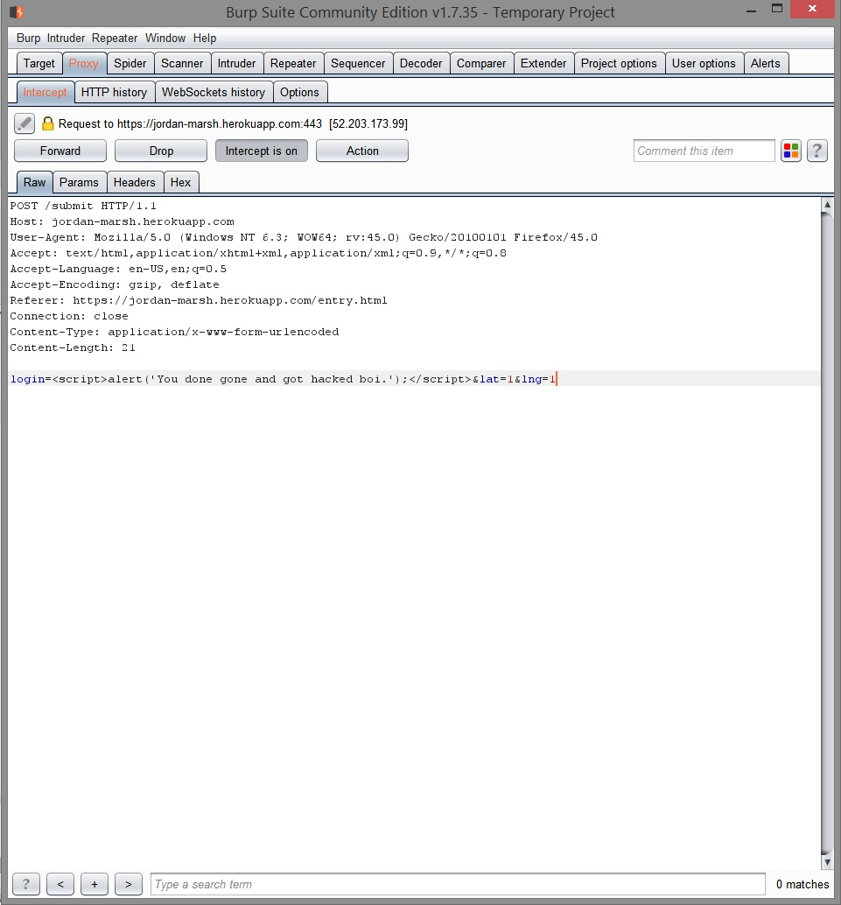
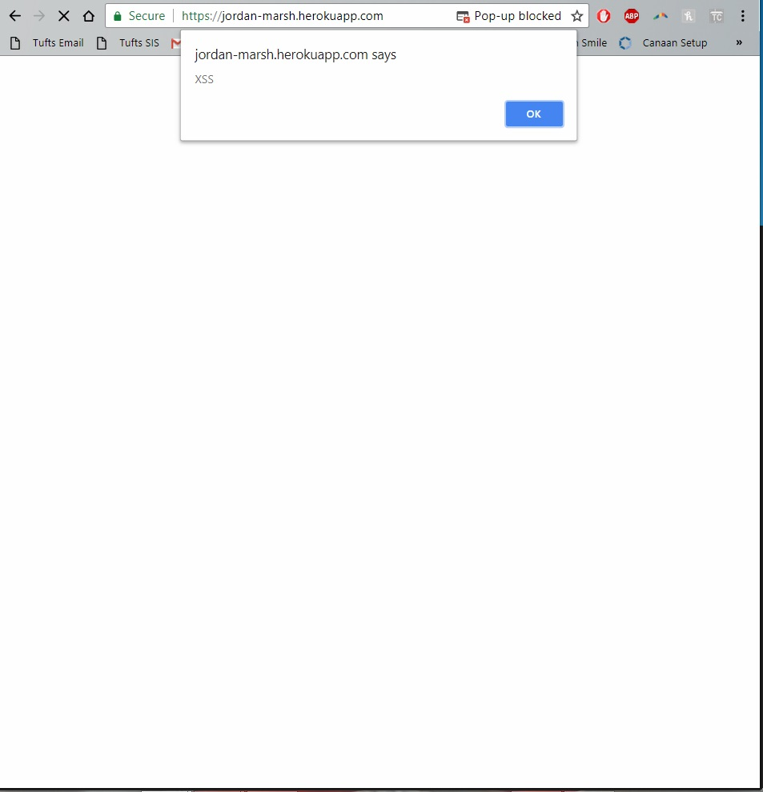
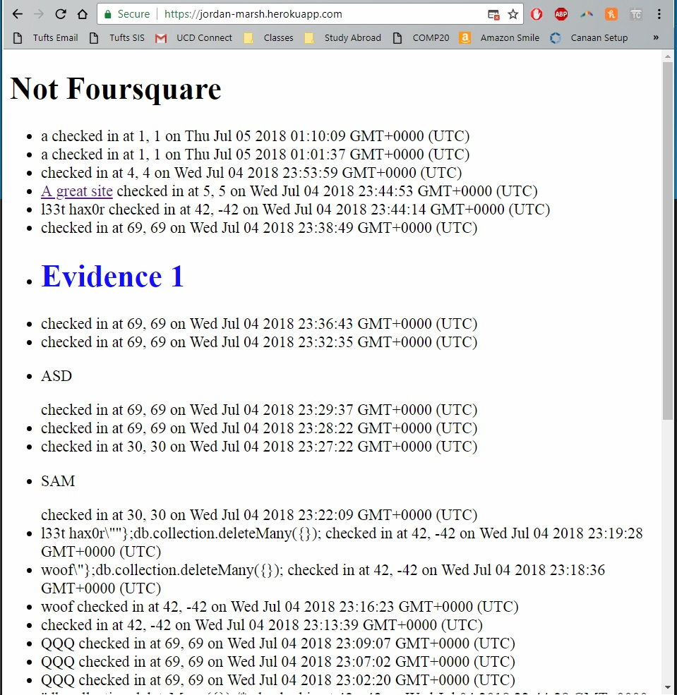

I was hired to "document and resolve the security and privacy issues in a working Node.js + Express + MongoDB web application" which may be found here . It is a website and server that lets user login with a name, latitude, and longitude and allows other users to check on the data here .
I conducted black-box testing with the Burp Suite tool.
I found that the service not checking user input allows malicious actors to affect other user's experiences with the site including popups, images, and videos.
Issue: Cross-Site Scripting
Location: https://jordan-marsh.herokuapp.com/entry.html
Severity: This is a high severity issue because it allows tampering with other user's experiences.
Examples and Evidence:
  I found this issue by intercepting data with Burp Suite and modifying data to hold HTML code that held Javascript code. Examples of possibly inserted code:
Resolution: Just as the user's latitude and longitude are validated, the user's login should be validated to make sure that it does not contain harmful code. Example of how to do this:
Beyond previous suggestions, I would also suggest that application uses the browser's information for latitude and longitude so that a user can not lie about their position via the online form. Making the recommended change should take no more than 15 minutes and cost no more than $25.